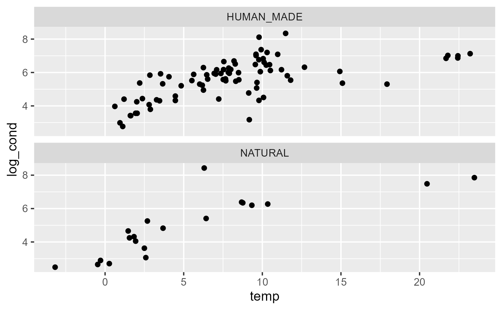
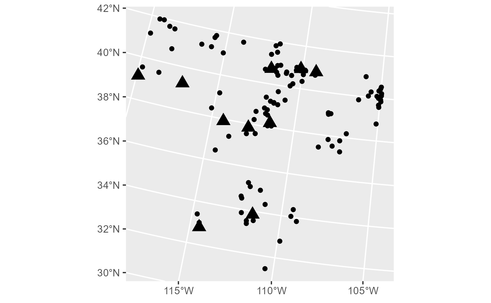
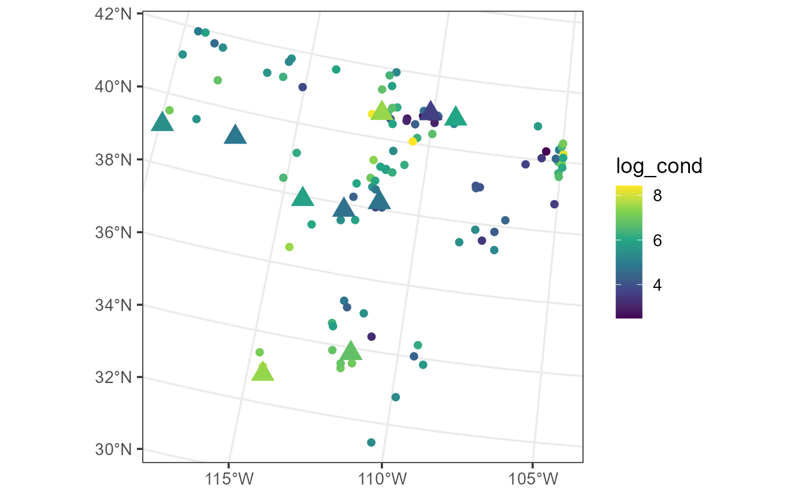
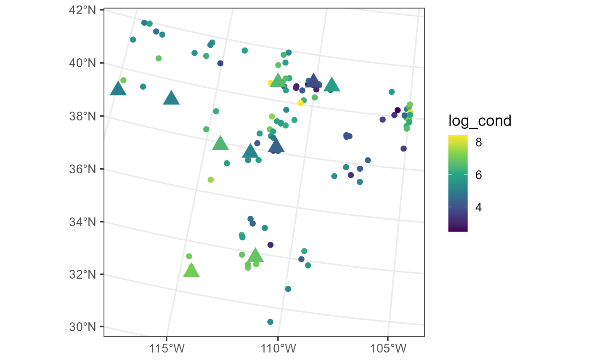

The Spatial Decorrelation Transformation for Machine Learning Models
Michael Dumelle, Matt Heaton, and Ryan A. Hill
Source:vignettes/articles/decorrelate.Rmd
decorrelate.RmdIntroduction
spmodel is a R package used to fit,
summarize, and predict for a variety of spatial statistical models. This
vignette explores tools for a spatial decorrelation transformation that
can be applied as a preprocessing step for machine learning models like
random forests (Breiman 2001). The spatial
decorrelation works by first decorrelating the data by removing spatial
covariance (i.e., correlation, dependence). These decorrelated data are
used to fit a machine learning model and use it to make predictions of
new observations. These predictions are then adjusted by recorrelating
the data by adding back in the original spatial covariance. This
approach is flexible and can accommodate any machine learning model, as
the decorrelation and recorrelation steps happen separately from the
machine learning modeling. The spatial decorrelation transformation can
significantly improve a machine learning model’s inferential and
predictive capacity by formally incorporating spatial covariance into
the model building process (Heaton et al.
2025). The full technical details are given in the Spatial
Decorrelation Transformation section of the Technical Details
vignette.
Before proceeding, we load spmodel, sf,
ggplot2, and ranger:
If using spmodel in a formal publication or report,
please cite it. Citing spmodel lets us devote more
resources to the package in the future. We view the spmodel
citation:
citation(package = "spmodel")
#> To cite spmodel in publications use:
#>
#> Dumelle M, Higham M, Ver Hoef JM (2023). spmodel: Spatial statistical
#> modeling and prediction in R. PLOS ONE 18(3): e0282524.
#> https://doi.org/10.1371/journal.pone.0282524
#>
#> A BibTeX entry for LaTeX users is
#>
#> @Article{,
#> title = {{spmodel}: Spatial statistical modeling and prediction in {R}},
#> author = {Michael Dumelle and Matt Higham and Jay M. {Ver Hoef}},
#> journal = {PLOS ONE},
#> year = {2023},
#> volume = {18},
#> number = {3},
#> pages = {1--32},
#> doi = {10.1371/journal.pone.0282524},
#> url = {https://doi.org/10.1371/journal.pone.0282524},
#> }The lake Data
In this vignette, we use the point-referenced lake data,
an sf object that contains data on climate data for lakes
in the southwestern United States. We view the first few rows of
lake:
lake
#> Simple feature collection with 102 features and 9 fields
#> Geometry type: POINT
#> Dimension: XY
#> Bounding box: xmin: -2004016 ymin: 1031593 xmax: -753669.4 ymax: 2338804
#> Projected CRS: NAD83 / Conus Albers
#> # A tibble: 102 × 10
#> comid log_cond cond state temp precip elev origin year
#> * <chr> <dbl> <dbl> <chr> <dbl> <dbl> <dbl> <chr> <fct>
#> 1 20451100 6.32 554 AZ 12.7 49.4 1567 HUMAN_MADE 2012
#> 2 20476542 7.02 1121 AZ 21.8 57.8 459 HUMAN_MADE 2012
#> 3 10001770 7.13 1246 AZ 23.2 9.12 69.1 HUMAN_MADE 2012
#> 4 20584396 6.17 477 AZ 11.2 44.4 1822 HUMAN_MADE 2012
#> 5 20524727 5.48 239 AZ 8.31 61.2 2168 HUMAN_MADE 2012
#> 6 20479908 7.00 1096 AZ 22.4 23.1 366. HUMAN_MADE 2012
#> 7 10001834 7.85 2570 AZ 23.5 9.89 57.7 NATURAL 2012
#> 8 20695686 4.77 118. AZ 9.13 59.1 2072. HUMAN_MADE 2012
#> 9 21327603 5.30 201 AZ 17.9 28.3 1006. HUMAN_MADE 2012
#> 10 20449310 4.33 76 AZ 9.79 61.4 1998. HUMAN_MADE 2012
#> # ℹ 92 more rows
#> # ℹ 1 more variable: geometry <POINT [m]>We can learn more about lake by running
help("lake", "spmodel").
Our goal is to use a machine learning model (here, a random forest)
to study the impact of the explanatory variable(s) (here, temperature)
on the response variable (here, log conductivity) while accounting for
spatial covariance among nearby observations. Before fitting any models,
we will visualize some relationships among variables. First, we
visualize the spatial distribution of log conductivity
(log_cond) in lake by running
ggplot(lake, aes(color = log_cond)) +
geom_sf() +
scale_color_viridis_c() +
theme_gray(base_size = 14)
Distribution of log conductivity in the data.
log_cond values are spatially patterned, whereby groups
of high and low values of log conductivity occur together. Second, we
visualize the relationship between log conductivity and temperature (via
the temp variable) for both naturally occurring and
human-made lakes (via the origin variable):
ggplot(lake, aes(x = temp, y = log_cond)) +
geom_point() +
facet_wrap(~ origin, nrow = 2) +
theme_gray(base_size = 14)
There appears to be a linearly increasing relationship between log conductivity and temperature across both naturally occurring and human-made lakes. There does not appear to be a noticeable difference in average log conductivity between the two lake types.
Ultimately, we will use our machine learning model to predict log
conductivity at new lakes in lake_preds. We can view the
first few rows of lake_preds:
lake_preds
#> Simple feature collection with 10 features and 7 fields
#> Geometry type: POINT
#> Dimension: XY
#> Bounding box: xmin: -2026720 ymin: 1249440 xmax: -1095597 ymax: 2078471
#> Projected CRS: NAD83 / Conus Albers
#> # A tibble: 10 × 8
#> comid state temp precip elev origin year geometry
#> * <chr> <chr> <dbl> <dbl> <dbl> <chr> <fct> <POINT [m]>
#> 1 20438850 AZ 20.7 48.3 533. HUMAN_MADE 2012 (-1428511 1315340)
#> 2 21411459 AZ 23.4 9.23 47 HUMAN_MADE 2017 (-1707808 1249440)
#> 3 20595958 NV 10.6 37.2 1604 HUMAN_MADE 2012 (-1581102 1804961)
#> 4 10693615 NV 6.51 51.8 2256. HUMAN_MADE 2012 (-1795120 2002673)
#> 5 8942419 NV 7.01 66.5 2124. HUMAN_MADE 2012 (-2026720 2043246)
#> 6 20704361 UT 5.10 72.2 2569. NATURAL 2012 (-1450440 1770802)
#> 7 10038630 UT 8.76 21.9 1653. NATURAL 2012 (-1095597 2060788)
#> 8 10037090 UT 1.90 56.8 2804. NATURAL 2012 (-1175066 2077765)
#> 9 10389176 UT 11.4 40.9 1291. NATURAL 2012 (-1329835 2078471)
#> 10 4900285 UT 2.28 57.9 3098 NATURAL 2017 (-1337946 1794833)We can also view the lake_preds locations (large
triangles) alongside the lake locations (small
circles):
ggplot() +
geom_sf(data = lake) +
geom_sf(data = lake_preds, pch = 17, size = 5) +
theme_gray(base_size = 14)
Fitting machine learning models often involves some random components (i.e., randomly subsampling variables), so we set a reproducible seed to reproduce results locally:
set.seed(0)The Spatial Decorrelation Transformation and
decorrelate()
The decorrelate() Function
The decorrelate() function applies the spatial
decorrelation transformation directly to a (training) data set.
decorrelate() generally requires the following three
arguments:
-
formula: a formula that describes the relationship between the response variable (\(\mathbf{y}\)) and explanatory variables (\(\mathbf{X}\)) -
data: adata.frameorsfobject that contains the response variable, explanatory variables, and spatial information -
spcov_type: the spatial covariance type ("exponential","matern","spherical", etc) -
algorithm: the machine learning algorithm to apply; options are"ranger"(random forest via the R packageranger(Wright and Ziegler 2017); the default),"randomForest"(random forest via the R packagerandomForest(Liaw and Wiener 2002)), and"xgboost"(gradient boosting via the R packagexgboost(Chen et al. 2025)).
decorr_mod <- decorrelate(
formula = log_cond ~ temp + origin,
data = lake,
spcov_type = "exponential",
algorithm = "ranger"
)If data is an sf (Pebesma 2018) object, spatial information is
stored in the object’s geometry. If data is a
data.frame, then the x-coordinates and y-coordinates must
also be provided via the xcoord and ycoord
arguments to decorrelate().
The decorrelate() estimates spatial decorrelation
transformation parameters using a grid search approach (Heaton et al. 2025) (see the Grid
Search and Cross-Validated Parameter Selection section of the
Technical Details vignette for the full details, including the
cross-validated splitting options). By default, 80% of the observations
in data are randomly assigned to a training set and the
remaining 20% to a test set. Then for each set of parameters in the grid
search, a random forest is fit to the training set and used to predict
the test set data. More explicitly, we have
- A candidate grid of spatial decorrelation parameters is proposed.
- The data are split into (possibly multiple) training and test sets.
- For the first candidate grid element, apply the spatial decorrelation transformation to the training and test data, fit a machine learning model to the decorrelated training data, predict the decorrelated test data, recorrelate the test data predictions, and compute fit statistics (e.g., MSPE).
- Repeat Step 3 for the remaining grid elements.
- Using the best parameter set from the grid search, apply the spatial decorrelation transformation to the entire data set, fit a machine learning model to the decorrelated data, and conduct inference (e.g., variable importance) and/or make predictions for new data.
A tidied version of the grid of evaluated parameters is returned by
tidy(decorr_mod$grid)
#> # A tibble: 11 × 8
#> spcov_type de ie range bias MSPE RMSPE cor2
#> <chr> <dbl> <dbl> <dbl> <dbl> <dbl> <dbl> <dbl>
#> 1 exponential 1.07 0.0565 452228. -0.0891 0.608 0.780 0.721
#> 2 exponential 0.282 0.847 452228. -0.179 0.663 0.814 0.728
#> 3 exponential 1.07 0.0565 150743. 0.0526 0.714 0.845 0.668
#> 4 exponential 0.565 0.565 452228. -0.306 0.800 0.894 0.693
#> 5 exponential 0.847 0.282 452228. -0.263 0.842 0.918 0.648
#> 6 exponential 0.565 0.565 150743. -0.333 0.887 0.942 0.656
#> 7 exponential 0.847 0.282 150743. -0.172 0.913 0.956 0.593
#> 8 exponential 0.0565 1.07 452228. -0.284 1.11 1.06 0.546
#> 9 exponential 0.0565 1.07 150743. -0.288 1.15 1.07 0.526
#> 10 exponential 0.282 0.847 150743. -0.284 1.15 1.07 0.520
#> 11 no transformation NA NA NA -0.0614 1.36 1.17 0.582The grid shows the spatial covariance type (spcov_type),
the spatially dependent random error variance (de), the
independent random error variance (ie), and the spatial
range parameter (range) for each grid row. Also reported
are mean bias (bias), mean-squared-prediction error (MSPE),
root-mean-squared-prediction error (RMSPE), and
(predictive) R-squared of the model applied to the test set. There is
also a row added for data that are completely untransformed (i.e., the
random forest was applied to the raw data). By default, the grid is
sorted by MSPE – the first row has the lowest (best)
MSPE. The standard random forest has the highest (worst)
MSPE. The parameters for the best MSPE are treated as the
“estimated” parameters and used to apply the spatial decorrelation
transformation to the entire data set (all observations in
data). This information is stored in the
decorrelate_data element of decorrelate().
Several other useful pieces of information are stored in the
decorrelate() output, such as the evaluated grid and
machine learning algorithm used. Importantly, the fit of the machine
learning algorithm applied to the transformed data is stored in the
fit element.
Prediction Using predict()
Like other models in spmodel, we can make predictions at
unobserved locations using predict():
lake_preds$preds <- predict(decorr_mod, newdata = lake_preds)The log conductivity predictions closely resemble patterns from the observed lakes:
ggplot() +
geom_sf(data = lake, aes(color = log_cond)) +
geom_sf(data = lake_preds, aes(color = preds), shape = 17, size = 5) +
scale_color_viridis_c() +
theme_bw(base_size = 14)
Additional decorrelate() Features
Like other spmodel functions, decorrelate()
accepts various additional arguments, a few of which we describe
below:
-
statistic: The statistic by which to rank models. The default is mean-squared-prediction error (MSPE) in the test set. -
training: A list that controls the way observations are assigned to training and test sets. The default is to assign 80% of observations to the training set and 20% to the test set. Arguments totrainingallow for replicating the test/train split using different random assignments or for k-fold cross validation. When multiple test/training splits are generated (either via replication or cross validation), test set statistics are averaged over each split. For k-fold cross validation, the default is five folds (i.e., k = 5), matching the 80/20 default split. -
ordering: The approach used to order observations for the decorrelation transformation. The default is usually"maxmin"(for maxmin ordering; see Katzfuss et al. (2024)) but can be"grts"(for spatially balanced ordering; see Dumelle et al. (2023)), depending on context. -
grid: A grid by which to evaluate parameters. If ignored,spmodelgenerates a candidate grid. -
dense_grid: Whether to generate a dense grid (with more parameter sets to evaluate) or a sparse grid (with fewer parameter sets to evaluate). The default is generallyTRUEfor a dense grid, though for larger sample sizes the default isFALSE. - Other familiar
spmodelarguments likespcov_type,anisotropy(for geometric anisotropy),random(for nonspatial random effects),partition_factor(for partition factors), andlocal(for large data sets) are also available. Thelocalargument implements the Vecchia approximation framework described by Heaton et al. (2025). - Additional arguments can be passed to the machine learning algorithm
via
.... - Please see the
decorrelate()documentation (e.g., via?decorrelate) for explicit details regarding its full suite of capabilities.
Below we explore a few examples that leverage this additional functionality.
Additional Example 1
Suppose that we want to apply the spatial decorrelation
transformation using a spherical spatial covariance function, rank test
data by predictive R-squared (cor2), and generate
importance metrics for the random forest applied to the decorrelated
data. The spcov_type argument specifies the spatial
covariance function, the statistic specifies the statistic
used to rank models, and the importance argument is an
argument passed to ranger::ranger() via ....
The training list indicates that we want three separate
training/test splits, where for each split, 60% of the data are assigned
to the training set and 40% to the test set (fit statistics like MSPE
are averaged over the splits):
mod1 <- decorrelate(
formula = log_cond ~ temp + origin,
data = lake,
spcov_type = "spherical",
statistic = "cor2",
importance = "impurity",
training = list(replicate = 3, p = 0.6)
)We can then tidy the model grid:
tidy(mod1$grid)
#> # A tibble: 11 × 8
#> spcov_type de ie range bias MSPE RMSPE cor2
#> <chr> <dbl> <dbl> <dbl> <dbl> <dbl> <dbl> <dbl>
#> 1 spherical 0.847 0.282 1356685. 0.0846 0.814 0.901 0.560
#> 2 spherical 0.565 0.565 1356685. 0.0233 0.841 0.916 0.540
#> 3 spherical 0.282 0.847 1356685. -0.0605 0.859 0.926 0.525
#> 4 spherical 1.07 0.0565 1356685. 0.178 0.886 0.940 0.524
#> 5 spherical 0.565 0.565 452228. 0.0883 0.911 0.950 0.496
#> 6 spherical 0.847 0.282 452228. 0.164 1.00 0.995 0.462
#> 7 spherical 0.282 0.847 452228. -0.00993 0.969 0.982 0.457
#> 8 spherical 1.07 0.0565 452228. 0.245 1.08 1.03 0.436
#> 9 spherical 0.0565 1.07 1356685. -0.0485 0.999 0.997 0.431
#> 10 no transformation NA NA NA -0.118 1.26 1.12 0.431
#> 11 spherical 0.0565 1.07 452228. -0.000461 1.17 1.08 0.351Recall that the best model (i.e., the first row of
mod1$grid) is used to decorrelate all the observed data and
fit a random forest. We can view the variable importance for each of the
variables from this decorrelation transformation:
sort(mod1$fit$variable.importance)
#> originNATURAL (Intercept) temp
#> 94.52652 148.02296 282.46036Temperature is the most important variable in the random forest model.
Additional Example 2
Suppose we want to apply the spatial decorrelation transformation
that accommodates anisotropy (i.e., the covariance decays differently in
different directions) and has a random effect that accommodates
additional covariance that varies based on sampling year. The standard
training grid has over 150 parameter combinations! While we could
evaluate all these, a faster (albeit potentially less effective) option
is to use a reduced (i.e., sparser) training grid, specified by setting
dense_grid to FALSE.
mod2 <- decorrelate(
formula = log_cond ~ temp + origin,
data = lake,
spcov_type = "exponential",
random = ~ year,
anisotropy = TRUE,
dense_grid = FALSE
)
tidy(mod2$grid)
#> # A tibble: 22 × 11
#> spcov_type de ie range rotate scale `1 | year` bias MSPE RMSPE
#> <chr> <dbl> <dbl> <dbl> <dbl> <dbl> <dbl> <dbl> <dbl> <dbl>
#> 1 exponential 0.966 0.0508 452228. 0 0.5 0.113 0.175 0.941 0.970
#> 2 exponential 0.966 0.0508 150743. 0 0.5 0.113 0.124 1.01 1.01
#> 3 exponential 0.966 0.0508 150743. 0 1 0.113 0.340 1.01 1.01
#> 4 exponential 0.0565 0.0565 150743. 0 0.5 1.02 0.181 1.03 1.01
#> 5 exponential 0.966 0.0508 452228. 0 1 0.113 0.336 1.08 1.04
#> 6 exponential 0.508 0.508 150743. 0 0.5 0.113 -0.0579 1.09 1.05
#> 7 exponential 0.377 0.377 150743. 0 0.5 0.377 0.0781 1.15 1.07
#> 8 exponential 0.966 0.0508 150743. 1.57 0.5 0.113 0.424 1.18 1.08
#> 9 exponential 0.966 0.0508 452228. 1.57 0.5 0.113 0.457 1.22 1.10
#> 10 exponential 0.508 0.508 452228. 0 0.5 0.113 -0.0172 1.23 1.11
#> # ℹ 12 more rows
#> # ℹ 1 more variable: cor2 <dbl>Additional Example 3
Suppose we have a few parameter combinations we want to evaluate
directly (i.e., we do not want to use the default candidate grid
generated by spmodel). We can construct this grid
directly:
mod3_grid <- data.frame(
spcov_type = "exponential",
de = c(1, 0.5, 1.5),
ie = c(0.2, 0.8, 1),
range = c(1e6, 5e6, 1e7)
)We can pass this grid directly via the grid argument. We
will also use the algorithm argument to use
xgboost::xgboost() (Chen et al.
2025) instead of the default ranger::ranger(), order
the data via the GRTS algorithm, and use (five-fold, the default) cross
validation to evaluate grid elements (via training):
mod3 <- decorrelate(
formula = log_cond ~ temp + origin,
data = lake,
algorithm = "xgboost",
ordering = "grts",
training = list(method = "cv"),
grid = mod3_grid
)
tidy(mod3$grid)
#> # A tibble: 3 × 8
#> spcov_type de ie range bias MSPE RMSPE cor2
#> <chr> <dbl> <dbl> <dbl> <dbl> <dbl> <dbl> <dbl>
#> 1 exponential 1 0.2 1000000 -0.0162 0.855 0.917 0.568
#> 2 exponential 0.5 0.8 5000000 -0.153 1.30 1.12 0.500
#> 3 exponential 1.5 1 10000000 -0.0843 1.29 1.13 0.444We can view each of the data assigned to training and test splits in
each fold by inspecting the training list. Below are the
folds from the first few observations in lake:
head(mod3$training$folds_index)
#> [1] 2 2 4 3 2 4Building Your Own Spatial Decorrelation Transformation
While the decorrelate() function is an all-purpose tool
applicable for a variety of scenarios, it does not accommodate every
possible way the spatial decorrelation transformation can be used. For
example, you may desire to use a machine learning algorithm not
available via decorrelate(). spmodel also
provides tools for each step of the spatial decorrelation
transformation. Let’s revisit these steps before proceeding:
- A candidate grid of spatial decorrelation parameters is proposed.
- The data are split into (possibly multiple) training and test sets.
- For the first candidate grid element, apply the spatial decorrelation transformation to the training and test data, fit a machine learning model to the decorrelated training data, predict the decorrelated test data, recorrelate the test data predictions, and compute fit statistics (e.g., MSPE).
- Repeat Step 3 for the remaining grid elements.
- Using the best parameter set from the grid search, apply the spatial decorrelation transformation to the entire data set, fit a machine learning model to the decorrelated data, and conduct inference (e.g., variable importance) and/or make predictions for new data.
We will use our own spatial decorrelation transformation to study the
importance of the temp and origin variables
(as they relate to log_cond) in lake and make
predictions of log_cond at the lakes in
lake_preds by following the five steps outlined above.
Step 1: Propose Candidate Grid
If there is a grid of interest, you may specify it as a data frame.
The column names must correspond to the relevant arguments in
spcov_params():
# custom parameters for the grid
grid <- data.frame(
spcov_type = "gaussian",
de = c(0.4, 1.2, 1.6, 2, 1.5),
ie = c(0.1, 0.5, 0.8, 1, 0.1),
range = c(1e6, 5e6, 1e7, 2e6, 1e8)
)Alternatively, you can let spmodel select a grid for
you:
decorrelate_grid(
formula = log_cond ~ temp + origin,
data = lake,
spcov_type = "gaussian"
)
#> spcov_type de ie range rotate scale
#> 1 gaussian 1.07328608 0.05648874 261094.1 0 1
#> 2 gaussian 0.84733112 0.28244371 261094.1 0 1
#> 3 gaussian 0.56488741 0.56488741 261094.1 0 1
#> 4 gaussian 0.28244371 0.84733112 261094.1 0 1
#> 5 gaussian 0.05648874 1.07328608 261094.1 0 1
#> 6 gaussian 1.07328608 0.05648874 783282.4 0 1
#> 7 gaussian 0.84733112 0.28244371 783282.4 0 1
#> 8 gaussian 0.56488741 0.56488741 783282.4 0 1
#> 9 gaussian 0.28244371 0.84733112 783282.4 0 1
#> 10 gaussian 0.05648874 1.07328608 783282.4 0 1
#> 11 none 0.00000000 1.00000000 Inf 0 1We will proceed with the custom grid stored as grid.
Step 2: Training and Test Splits
We will use a single training/test split to evaluate grid elements.
We will randomly assign approximately 80% of the lake data
to the training set and the remaining 20% to the test set, matching
decorrelate()’s own default split described previously:
# number of observations in the lake data
n <- NROW(lake)
# creating an index that corresponds with the row position of each datum
index <- seq(from = 1, to = n)
# setting the size of the training data
n_train <- floor(0.80 * n)
# randomly generating the indices in lake that are assigned to the training data
train_index <- sample(index, size = n_train)
# creating the training data
lake_train <- lake[train_index, ]
# creating the test data
lake_test <- lake[-train_index, ]
# number of rows in the training data
NROW(lake_train)
#> [1] 81
# number of rows in the test data
NROW(lake_test)
#> [1] 21There are many ways to generate training/test splits; when using
decorrelate(), spmodel provides various
options via the training argument.
Step 3: Apply the First Spatial Decorrelation Transformation
We will apply the spatial decorrelation transformation using the
parameters in the first row of grid, which looks like:
# store the first row of the grid
grid1 <- grid[1, ]
grid1
#> spcov_type de ie range
#> 1 gaussian 0.4 0.1 1e+06Next, we make an spcov_params object from the row
# create an spcov_params object with the grid row
val <- spcov_params(
spcov_type = grid1$spcov_type,
de = grid1$de,
ie = grid1$ie,
range = grid1$range
)Using decorrelate(), we decorrelate the
lake_train data accordingly to the formula
log_cond ~ temp + origin and the spcov_params
value. Then, we fit a random forest model using
ranger::ranger() using the transformed explanatory
variables (tlake_train$tX) and response variable
(tlake_train$ty):
# decorrelate the training data
tlake_train <- decorrelate_data(
formula = log_cond ~ temp + origin,
data = lake_train,
spcov_params = val
)
# fit a random forest to the decorrelated training data
rfmod <- ranger(x = tlake_train$tX, y = tlake_train$ty)Then we decorrelate the lake_test data and make
predictions, using the random forest model, for each observation in the
test data:
# decorrelate the test data
tlake_test <- decorrelate_newdata(tlake_train, newdata = lake_test)
# make predictions for the decorrelated test data
rf_tpreds <- predict(rfmod, data = tlake_test$tX_newdata)$predictionsFinally, we recorrelate these test data predictions according to the spatial decorrelation transformation and compare the recorrelated predictions to the true valies in the test data using a fit statistic, e.g., mean-squared-prediction error (MSPE):
# recorrelate the decorrelated test data predictions
sp_decorr_preds <- recorrelate_newdata(tlake_test, rf_tpreds)
# compute MSPE by comparing the recorrelated predictions to the true values
mspe <- mean((sp_decorr_preds - lake_test$log_cond)^2)
mspe
#> [1] 0.8804678Step 4: Apply the Remaining Spatial Decorrelation Transformations
We will repeat the above process for the remaining rows in
grid using a for loop:
# use a for loop to repeat Step 3 for the remaining grid elements
for (i in 2:NROW(grid)) {
# store the ith row of the grid
gridi <- grid[i, ]
# create an spcov_params object with the grid row
val <- spcov_params(
spcov_type = gridi$spcov_type,
de = gridi$de,
ie = gridi$ie,
range = gridi$range
)
# decorrelate the training data
tlake_train <- decorrelate_data(
formula = log_cond ~ temp + origin,
data = lake_train,
spcov_params = val
)
# fit a random forest to the decorrelated training data
rfmod <- ranger(x = tlake_train$tX, y = tlake_train$ty)
# decorrelate the test data
tlake_test <- decorrelate_newdata(tlake_train, newdata = lake_test)
# make predictions for the decorrelated test data
rf_tpreds <- predict(rfmod, data = tlake_test$tX_newdata)$predictions
# recorrelate the decorrelated test data predictions
sp_decorr_preds <- recorrelate_newdata(tlake_test, rf_tpreds)
# compute the ith MSPE by comparing the recorrelated predictions to the true values
mspe[i] <- mean((sp_decorr_preds - lake_test$log_cond)^2)
}
# add an MSPE column to the grid
grid$mspe <- mspe
# sort the grid by increasing (worse) MSPE
grid <- grid[order(grid$mspe), ]The “best” spatial decorrelation transformation parameters (according to test data MSPE) are the first row of this sorted grid:
# print the grid
grid
#> spcov_type de ie range mspe
#> 4 gaussian 2.0 1.0 2e+06 0.6471843
#> 2 gaussian 1.2 0.5 5e+06 0.7475250
#> 3 gaussian 1.6 0.8 1e+07 0.8438461
#> 1 gaussian 0.4 0.1 1e+06 0.8804678
#> 5 gaussian 1.5 0.1 1e+08 0.9219529
# print only the first row of the grid
best <- grid[1, ]
best
#> spcov_type de ie range mspe
#> 4 gaussian 2 1 2e+06 0.6471843Step 5: Apply the Spatial Decorrelation Transformation to All Data, Make Inferences, and Predict
We will store the “best” parameters as an spcov_params()
object:
# create an spcov_params object with the grid's best row
spcov_params_use <- spcov_params(
spcov_type = best$spcov_type,
de = best$de,
ie = best$ie,
range = best$range
)Then we will apply the spatial decorrelation transformation to the
entire lake data:
# decorrelate the lake data
tlake <- decorrelate_data(log_cond ~ temp + origin, lake, spcov_params = spcov_params_use)We can fit a random forest on the decorrelated data and then assess variable importance to better understand the relative importance of our explanatory variables (a larger importance value indicates a more important explanatory variable)
# fit a random forest to the decorrelated data
rfmod <- ranger(x = tlake$tX, y = tlake$ty, importance = "impurity")
# show the variable importance
sort(rfmod$variable.importance)
#> originNATURAL (Intercept) temp
#> 103.2477 126.4124 316.7762Temperature is the most important variable in the random forest model.
Next we decorrelate the lake_preds data, make
predictions on the decorrelated scale, and then recorrelate these
predictions to the original scale:
# decorrelate the lake_preds data
tlake_preds <- decorrelate_newdata(tlake, newdata = lake_preds)
# make predictions for the decorrelated lake_preds data
rf_tpreds <- predict(rfmod, data = tlake_preds$tX_newdata)$predictions
# recorrelate the decorrelated lake_preds predictions
lake_preds$preds <- recorrelate_newdata(tlake_preds, rf_tpreds)Finally, we visualize these predictions alongside the
log_cond values in lake:
ggplot() +
geom_sf(data = lake, aes(color = log_cond)) +
geom_sf(data = lake_preds, aes(color = preds), shape = 17, size = 5) +
scale_color_viridis_c() +
theme_bw(base_size = 14)
The log conductivity predictions (triangles) closely resemble patterns from the observed lakes (circles).